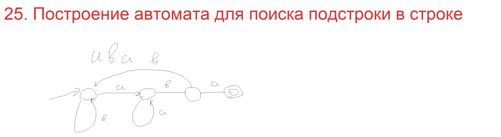

25. Автомат поиска подстроки
Теория, примеры и иллюстрации по теме.
Состояния и переходы
Состояние q хранит длину наибольшего совпавшего префикса шаблона. Для следующего символа вычислите длину префикса, который остаётся суффиксом просмотренного текста. Таблицу переходов можно построить через префикс-функцию. Состояние длины шаблона отмечает вхождение. Продолжайте обработку для поиска перекрывающихся вхождений.
Материалы и примеры по пунктам
Построение автомата для поиска подстроки в строке
Схемы и рукописные примеры
